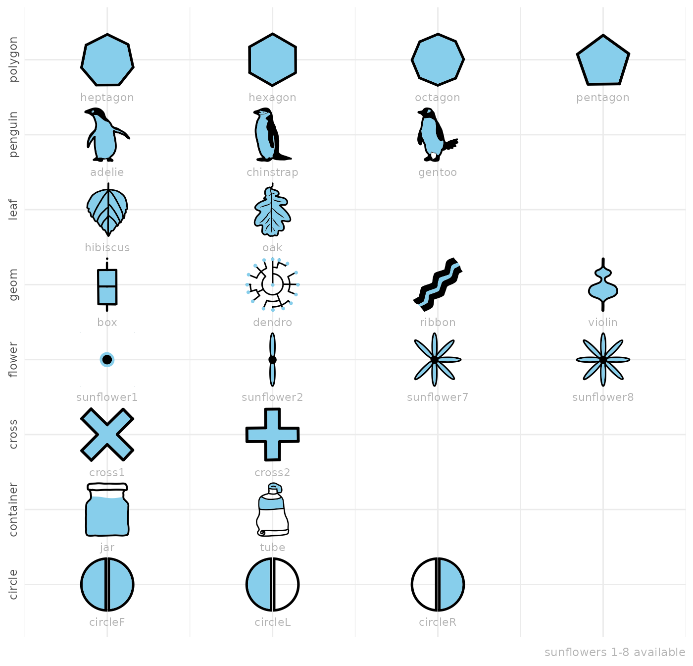

Motivation
ggfoundry was inspired a little by Stack Overflow posts seeking specific shapes. But, in truth, mostly by a personal interest in getting acquainted with grid graphics (the underpinnings of ggplot2).
Shape landscape
Yes, there is already a seemingly near-infinite number of shapes out there:
- Those familiar to ggplot users (some fillable) as described in the ggplot2 documentation;
- Colourable unicodes and icons like fontawesome;
- ggimage enables the use of whole pictures;
- And then there is the DIY (Do-It-Yourself) approach: Conjuring up grobs (grid graphical objects); perhaps with a sprinkle of trigonometry.
But sometimes you just can’t find what you want. Nor manipulate it in the way you would like.
ggfoundry offers arbitrary hand-crafted colourable and fillable shapes for ggplot2 and is reviewed side-by-side with other options in contrast with alternatives.
Foundry process
These artisanal symbols begin life as hand-drawn vector images with
two layers: an outline and a fill. Each SVG pair is converted to Cairo
graphics format, forged at extreme temperatures into objects of class
“Picture”, and finally delicately cast as a gTree
representation of the original shape. But not quite back to where we
started, because they are now editable.
When cooled and finely burnished, the gTree and all its
grob children may then be manipulated by geom_casting() to
render the desired ggplot with those special high-end adornments.
Available shapes
ggfoundry may well be the destination of “last resort”!
After travelling the mountains, seas and forests of the world in search of that elusive shape (or small set), a hand-made grob may be the fillable “Holy Grail” sought via a Github issue.
These sets are included with the latest version of the package. You
can “mix and match” shapes from different sets; the “set” is for
grouping shapes in the documentation and for use in
shapes_cast() to filter for the desired shapes.
library(ggfoundry)
library(dplyr)
library(forcats)
library(stringr)
df <- shapes_cast() |>
filter(!str_ends(shape, "3|4|5|6")) |>
mutate(x = row_number(), shape = fct_inorder(shape), .by = set)
df |>
ggplot(aes(x, set)) +
geom_text(aes(label = shape), nudge_y = -0.5, colour = "grey70", size = 3) +
geom_casting(aes(shape = shape), size = 0.19, fill = "skyblue") +
scale_shape_manual(values = as.character(df$shape)) +
scale_x_continuous(expand = expansion(add = 0.5)) +
scale_y_discrete(expand = expansion(add = 0.7)) +
labs(x = NULL, y = NULL, caption = "sunflowers 1-8 available") +
theme_minimal() +
theme(
text = element_text(colour = "grey70"),
axis.text.y = element_text(angle = 90, hjust = 0.5),
axis.text.x = element_blank(),
axis.ticks.x = element_blank(),
legend.position = "none"
)
Simple example
Using some made-up data simulating a “random walk”,
geom_casting() adds a layer of custom shapes to the
plot.
When the shape is mapped to a variable, then
scale_shape_manual() is required to explicitly name the
desired shapes as a character vector. This is because standard shapes
(as used for example in geom_point()) are associated with a
number, e.g. a circle is 19, whereas geom_casting() shapes
are associated only with character strings.
One grob is created for each of the 2 groups. And each grob stores
the x and y coordinates for that group to
enable each shape to be rendered at several locations.
Using scale_colour_manual() and
scale_fill_manual(), we can also select a custom palette
for the shape colours and fills.
# Toy Data
set.seed(123)
random_walk <- \(x, y, z) cumsum(rnorm(x, mean = y, sd = sqrt(z)))
df <- data.frame(
x = rep(1:10, 2),
y = c(
random_walk(10, 1, 1),
random_walk(10, 3, 1.3)
),
group = factor(c(rep(1, 10), rep(2, 10)))
)
# Plot with geom_casting()
df |>
ggplot(aes(x, y, shape = group, colour = group, fill = group)) +
geom_line(show.legend = FALSE) +
geom_casting() +
scale_colour_manual(values = c("darkred", "darkgreen")) +
scale_fill_manual(values = c("pink", "lightgreen")) +
scale_shape_manual(values = c("cross1", "cross2")) +
labs(title = "ggfoundry") +
theme_bw() +
theme(plot.subtitle = element_text(size = 10))See the showcase article to explore other use cases and contrast with alternatives to review against other options.
Acknowledgements
Without the pivotal grConvert (Potter 2024) and grImport2 (Potter and Murrell 2023) packages, the foundry process would not have been viable. And only thanks to the work behind ggplot2 (Wickham 2016), may the shapes cast be so beautifully visualised.